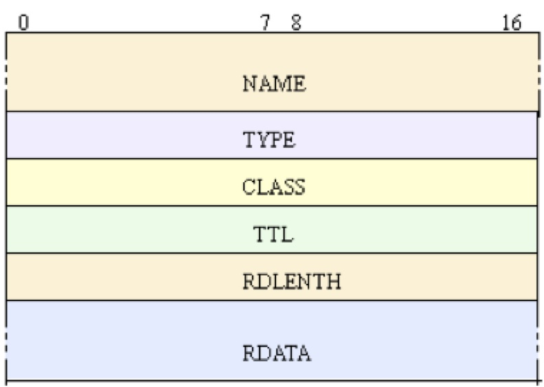
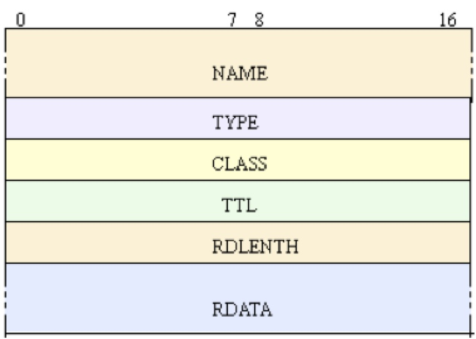

This is a hands-on practice for my coursework at The George Washington University. I choose DNS resolver as a case study of programming with network protocols. DNS is a widely used service on Internet, while its protocol is relative simple. Request message and response message are exchanged between client and server or two DNS servers. DNS message can be carried by TCP or UDP protocol. The key point of programming with DNS protocol is understanding DNS message formats. In this case, we will study the formats of three sections in DNS message, those are Header, Questions, and Answers. Request message consists of Header section and Questions sections. Response message consists of Header section, Question section, and Answers section if there is any resource record need to be returned. Response message may contain other sections, but we just ignore them in this case study.
Please find complete source code and documents at Github:
Below is a discussion about this case study: